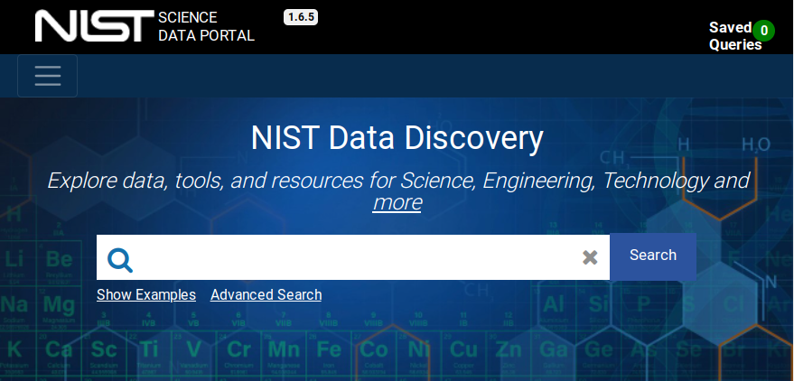
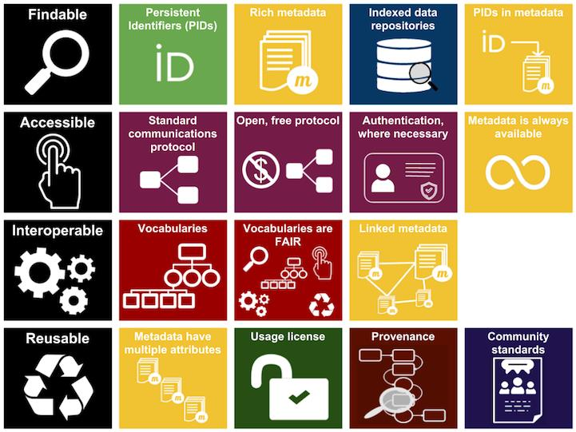
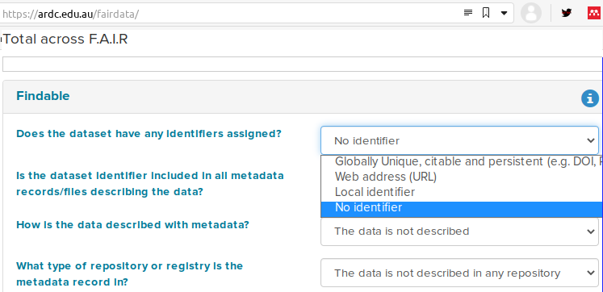
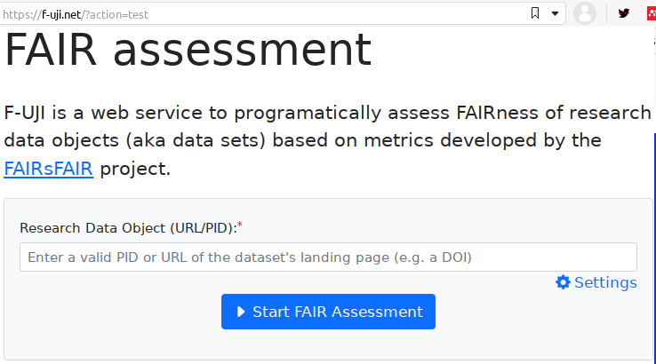

layout: true --- .center[ # FAIR Principles for Phase-Field Data **Trevor Keller** NIST MSED & CTCMS **Andrea Medina-Smith** NIST Research Library 11 May 2022 CHiMaD Phase-Field Methods XIII Northwestern University *These slides are available from* [`github:tkphd/fair-phase-field-data`](https://github.com/tkphd/fair-phase-field-data) ] ??? [NOTE]: * You need active internet connection to access `remark.js` --- .left-column[ ## What is FAIR? ] .right-column[ .center[ ] - [**GO-FAIR.org**](https://go-fair.org) offers detailed analysis of the FAIR Principles with examples of usage and best practices - FAIR data paper: > Mark Wilkinson, *et al.* "The FAIR Guiding Principles for scientific > data management and stewardship,” *Scientific Data* **3** (2016) 160018. > DOI: [10.1038/sdata.2016.18](https://doi.org/10.1038/sdata.2016.18) - Extension from "data" to include software: > Daniel S. Katz *et al.* "FAIR4RS: Taking a fresh look at FAIR for research > software," *Patterns* **2** (2021) 100222. DOI: > [10.1016/j.patter.2021.100222](https://doi.org/10.1016/j.patter.2021.100222) ] --- .left-column[ ## Why go FAIR? ### Generally ] .right-column[ Releasing FAIR datasets can * increase visibility & citations * attract new partnerships, collaborations * enable new research questions to be raised & answered * satisfy funding agency requirements Check out the [**awesome-fair-data**]( https://github.com/Materials-Data-Science-and-Informatics/awesome-fair-data) list by the Helmholtz Metadata Collaboration on Github ... or [**data.nist.gov**](https://data.nist.gov) .center[  ] ] --- .left-column[ ## Why go FAIR? ### Generally ### Specifically ] .right-column[ PFHub is automatically built, and needs to * **F**ind your dataset quickly & with persistence * `meta.yaml` filestores URL of dataset * **A**ccess usable data files without intervention * URL must contain a robot-downloadable CSV or TSV file * v**I**sualize the fields it needs without surprises * CSV columns must match specific names, or a human-generated mapping * **R**epeat the whole process to show off results * PFHub does not maintain *content*, only the framework to build the comparison charts Are we done? ] --- .left-column[ ## What is FAIR? ### Findable ] .right-column[ .center[ ] The first step in (re)using data is to find them. Metadata and data should be easy to find for both humans and computers. 1. (Meta)data are assigned a globally unique and persistent identifier 2. Data are described with rich metadata (defined by R1 below) 3. Metadata clearly and explicitly include the identifier of the data they describe 4. (Meta)data are registered or indexed in a searchable resource ] --- .left-column[ ## What is FAIR? ### Findable ### Accessible ] .right-column[ .center[ ] Once the user finds the required data, they need to know how they can be accessed, possibly including authentication and authorization. 1. (Meta)data are retrievable by their identifier using a standardized communications protocol 1. The protocol is open, free, and universally implementable 2. The protocol allows for an authentication and authorisation procedure, where necessary 2. Metadata are accessible, even when the data are no longer available ] --- .left-column[ ## What is FAIR? ### Findable ### Accessible ### Interoperable ] .right-column[ .center[ ] The data usually need to be integrated with other data. In addition, the data need to interoperate with applications or workflows for analysis, storage, and processing. 1. (Meta)data use a formal, accessible, shared, and broadly applicable language for knowledge representation. 2. (Meta)data use vocabularies that follow FAIR principles 3. (Meta)data include qualified references to other (meta)data ] --- .left-column[ ## What is FAIR? ### Findable ### Accessible ### Interoperable ### Reusable ] .right-column[ .center[ ] The ultimate goal of FAIR is to optimise the reuse of data. To achieve this, metadata and data should be well-described so that they can be replicated and/or combined in different settings. 1. (Meta)data are richly described with a plurality of accurate and relevant attributes 1. (Meta)data are released with a clear and accessible data usage license 2. (Meta)data are associated with detailed provenance 3. (Meta)data meet domain-relevant community standards ] --- .left-column[ ## FAIR Summary ] .right-column[ .center[  ] ] --- .left-column[ ## How FAIR is my dataset? ] .right-column[ .center[ ARDC FAIR Self-Assessment, <https://ardc.edu.au/fairdata>  F-UJI Automated FAIR Data Assessment, <https://f-uji.net>  ] ] --- .left-column[ ## Live Demo ### GitHub Gist ] .right-column[ Let's see what [ARDC](https://ardc.edu.au/fairdata) and [F-UJI](https://f-uji.net) have to say about one of my GitHub Gist uploads: .center[ <https://gist.github.com/tkphd/c4523570be7a1615de36f40660d7d4e0> ] .footnote[ ARDC: <https://ardc.edu.au/fairdata> F-UJI: <https://f-uji.net> ] ] --- .left-column[ ## Live Demo ### GitHub Gist ### Zenodo ] .right-column[ Let's see what [ARDC](https://ardc.edu.au/fairdata) and [F-UJI](https://f-uji.net) have to say about the same data, on Zenodo: .center[ <https://doi.org/10.5281/zenodo.1124941> ] .footnote[ ARDC: <https://ardc.edu.au/fairdata> F-UJI: <https://f-uji.net> ] ]